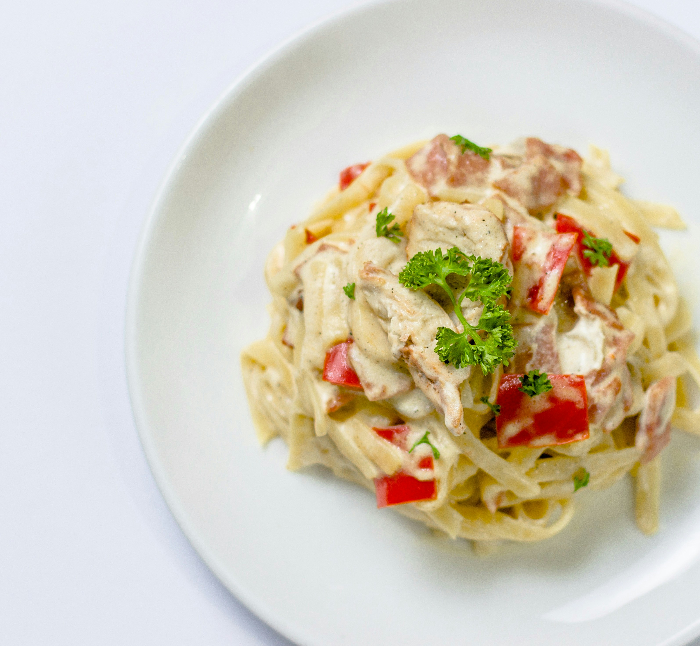

Pasta

Description
White sauce pasta is a creamy Italian-style dish made with pasta tossed in a rich, smooth white sauce. It is comforting, flavorful, and can be made with vegetables, chicken, or herbs.
Ingredients
- Pasta
- Butter
- All-purpose flour
- Milk
- Garlic
- Parmesan cheese
- Salt
- Black pepper
- Italian seasoning
- Chili flakes
Steps
- Boil the pasta in salted water according to the package instructions, then drain.
- Melt butter in a pan over medium heat and sauté the garlic.
- Add the flour and stir for 1–2 minutes to make a smooth mixture.
- Gradually add the milk while stirring continuously to prevent lumps.
- Cook until the sauce becomes smooth and creamy.
- Add Parmesan cheese, salt, black pepper, Italian seasoning, and chili flakes.
- Add the cooked pasta and mix well until it is evenly coated with the sauce.
- Cook for another 1–2 minutes, then serve hot.
Home